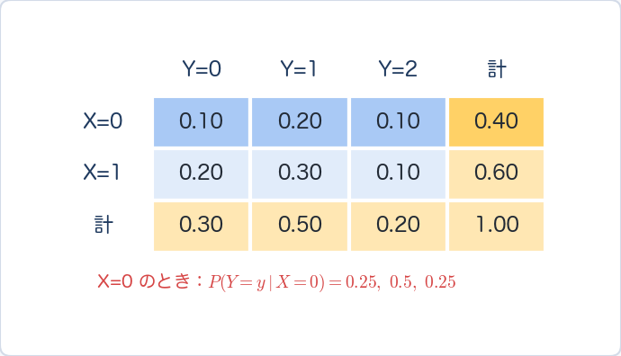
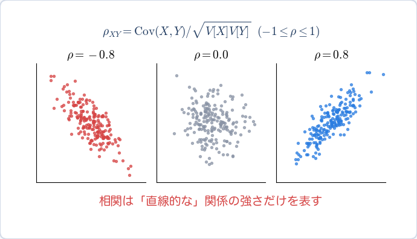
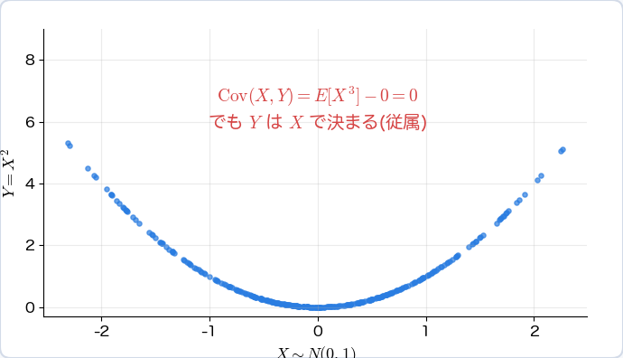
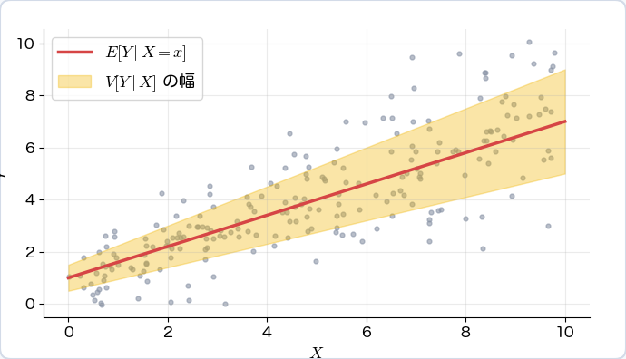
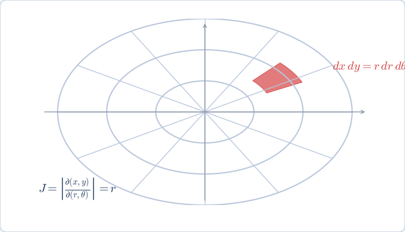
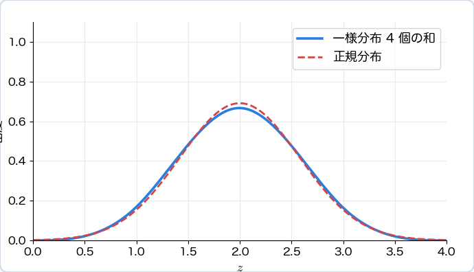
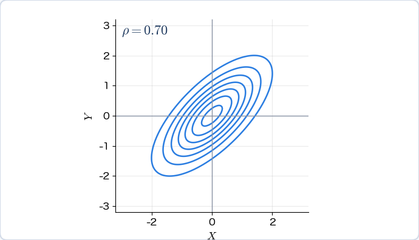
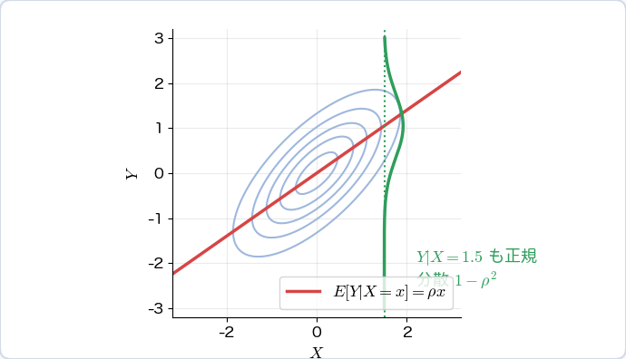
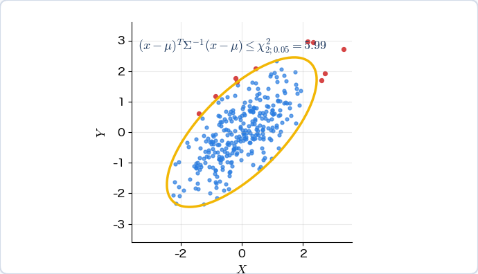

第3回 多変量分布と多変量正規分布
この回の学習目標
- 同時分布・周辺分布・条件付き分布の関係を計算できる
- 共分散・相関、独立と無相関の違い、全分散の法則を使える
- 2 変数の変換（ヤコビアン）と和の分布（畳み込み）を扱える
- 多変量正規分布の性質（周辺・線形変換・条件付き）と、マハラノビス距離を理解する
1. 同時分布・周辺分布・条件付き分布
2 つの確率変数 $(X,Y)$ の 同時確率（密度） $f(x,y)$ から、
$$\text{周辺：}\ f_X(x)=\int f(x,y)\,dy\quad(\text{離散なら和}),\qquad \text{条件付き：}\ f(y\mid x)=\frac{f(x,y)}{f_X(x)}$$
独立 $\Leftrightarrow f(x,y)=f_X(x)f_Y(y)$（すべての $x,y$ で）。
離散の例（行：$X$、列：$Y$）
| $Y=0$ | $Y=1$ | $Y=2$ | 計 | |
|---|---|---|---|---|
| $X=0$ | 0.10 | 0.20 | 0.10 | 0.40 |
| $X=1$ | 0.20 | 0.30 | 0.10 | 0.60 |
| 計 | 0.30 | 0.50 | 0.20 | 1.00 |
行・列の合計が周辺分布。$X=0$ のときの $Y$ の条件付き分布は、行を 0.4 で割って $(0.25,\,0.5,\,0.25)$。

2. 共分散と相関係数
$$\mathrm{Cov}(X,Y)=E[(X-E[X])(Y-E[Y])]=E[XY]-E[X]E[Y],\qquad \rho_{XY}=\frac{\mathrm{Cov}(X,Y)}{\sqrt{V[X]V[Y]}}$$
- $-1\le\rho\le1$。$|\rho|=1$ は完全な直線関係
- 相関は 直線的な関係 の強さしか測れない
- $V[X+Y]=V[X]+V[Y]+2\mathrm{Cov}(X,Y)$、$\mathrm{Cov}(aX,bY)=ab\,\mathrm{Cov}(X,Y)$

3. 独立と無相関
独立 $\Rightarrow$ 無相関（共分散 0）。逆は一般に成り立ちません。
反例：$X\sim N(0,1)$, $Y=X^2$。$Y$ は $X$ で決まる（従属）のに、$\mathrm{Cov}(X,Y)=E[X^3]-E[X]E[X^2]=0$。ただし 二変量（多変量）正規分布のときに限り、無相関 $\Leftrightarrow$ 独立 です。

4. 条件付き期待値と全分散の法則
$E[Y\mid X]$ は $X$ の関数（確率変数）です。
$$E[Y]=E\big[E[Y\mid X]\big]\quad(\text{繰り返し期待値の法則})$$
$$V[Y]=E\big[V[Y\mid X]\big]+V\big[E[Y\mid X]\big]\quad(\text{全分散の法則})$$
「群内のばらつきの平均 ＋ 群間のばらつき」という分解で、分散分析（第10回）と同じ発想です。

例（複合分布） 個数 $N$ と各回の値 $X_i$（独立同分布で $N$ とも独立）の合計 $S=\sum_{i=1}^NX_i$ では $E[S]=E[N]E[X]$、$V[S]=E[N]V[X]+V[N]E[X]^2$。
5. 2 変数の変換とヤコビアン
$(x,y)\to(u,v)$ の 1 対 1 変換で、
$$f_{U,V}(u,v)=f_{X,Y}(x,y)\,|J|,\qquad J=\det\begin{pmatrix}\partial x/\partial u&\partial x/\partial v\\\partial y/\partial u&\partial y/\partial v\end{pmatrix}$$
（1 変数の $|dx/dy|$ の拡張）。例：極座標 $x=r\cos\theta,\ y=r\sin\theta$ では $|J|=r$。独立な標準正規 $X,Y$ に使うと、$R^2=X^2+Y^2\sim\chi^2_2$、角度 $\theta\sim U(0,2\pi)$ で $R$ と独立になる（ボックス＝ミュラー法の根拠）。

6. 和の分布（畳み込み）
独立な $X,Y$ の和 $Z=X+Y$ の密度は
$$f_Z(z)=\int f_X(x)f_Y(z-x)\,dx$$
一様分布 2 個の和は三角形、3 個、4 個…と足すほど釣り鐘型に近づきます（中心極限定理）。畳み込みを直接計算せず、積率母関数の積 で分布を同定する方法も使えます。

7. 多変量正規分布
$p$ 次元ベクトル $X\sim N_p(\mu,\Sigma)$（平均ベクトル $\mu$、分散共分散行列 $\Sigma$）の密度は
$$f(x)=\frac{1}{(2\pi)^{p/2}|\Sigma|^{1/2}}\exp\left\{-\frac12(x-\mu)^T\Sigma^{-1}(x-\mu)\right\}$$
等高線は楕円で、相関が強いほど細長くなります。重要な性質は次の 4 つです。
- 周辺分布 も正規分布（$X_j\sim N(\mu_j,\Sigma_{jj})$）
- 線形変換 で閉じる：$AX+b\sim N(A\mu+b,\ A\Sigma A^T)$
- 無相関 $\Leftrightarrow$ 独立
- 条件付き分布 も正規分布（次項）

8. 多変量正規分布の条件付き分布
二変量正規分布で $X=x$ を与えたとき、
$$Y\mid X=x\ \sim\ N\left(\mu_Y+\rho\frac{\sigma_Y}{\sigma_X}(x-\mu_X),\ \ \sigma_Y^2(1-\rho^2)\right)$$
- 条件付き期待値は $x$ の 一次関数（これが回帰直線そのもの。傾き $\rho\sigma_Y/\sigma_X=\mathrm{Cov}/\sigma_X^2$）
- 条件付き分散 $\sigma_Y^2(1-\rho^2)$ は $x$ に よらず一定（$|\rho|$ が大きいほど小さくなる）

9. マハラノビス距離
$$D^2=(x-\mu)^T\Sigma^{-1}(x-\mu)$$
ばらつきの大きい方向は距離を小さく見積もる、共分散を考慮した距離です。$X\sim N_p(\mu,\Sigma)$ のとき $D^2\sim\chi^2_p$ なので、外れ値の検出や確率楕円（二変量の 95% 楕円は $D^2\le\chi^2_{2;0.05}=5.99$）に使えます。

演習問題
演習1 共分散と相関
問題 $X,Y$ は 0 か 1 をとり、同時確率は $P(0,0)=0.3,\ P(0,1)=0.2,\ P(1,0)=0.1,\ P(1,1)=0.4$。共分散と相関係数を求めよ。
解答 $E[X]=P(X=1)=0.5$, $E[Y]=P(Y=1)=0.6$, $E[XY]=P(1,1)=0.4$ なので $\mathrm{Cov}=0.4-0.5\times0.6=\mathbf{0.1}$。 ベルヌーイなので $V[X]=0.5\times0.5=0.25$, $V[Y]=0.6\times0.4=0.24$、$\rho=\dfrac{0.1}{\sqrt{0.25\times0.24}}=\dfrac{0.1}{\sqrt{0.06}}\approx\mathbf{0.41}$。
演習2 全分散の法則
問題 ある店の 1 日の客数 $N$ は平均 3 のポアソン分布。各客の購入額は独立に平均 2（千円）、分散 1 で、$N$ とも独立。売上合計 $S$ の期待値と分散を求めよ。
解答 $N$ を与えると $E[S\mid N]=2N$, $V[S\mid N]=N$。 $E[S]=E[2N]=\mathbf{6}$。 $V[S]=E[V[S\mid N]]+V[E[S\mid N]]=E[N]+V[2N]=3+4\times3=\mathbf{15}$（ポアソンの分散は平均に等しい）。
演習3 二変量正規分布
問題 $(X,Y)$ は二変量正規で平均はともに 0、$V[X]=4$, $V[Y]=9$, $\mathrm{Cov}(X,Y)=3$。$\rho$、$E[Y\mid X=2]$、$V[Y\mid X=2]$ を求めよ。
解答 $\rho=\dfrac{3}{2\times3}=\mathbf{0.5}$。 $E[Y\mid X=x]=\dfrac{\mathrm{Cov}}{V[X]}x=\dfrac34x$ なので $x=2$ で $\mathbf{1.5}$。 $V[Y\mid X]=9(1-0.25)=\mathbf{6.75}$（$=9-3^2/4$ でも同じ）。
演習4（発展） 線形変換
問題 $X_1,X_2$ が独立に $N(0,1)$ に従うとき、$U=X_1+X_2$, $V=X_1-X_2$ は独立か。
解答 $(U,V)$ は $(X_1,X_2)$ の線形変換なので二変量正規。$\mathrm{Cov}(U,V)=V[X_1]-V[X_2]=0$ で無相関、正規なので独立。
まとめ・チェックリスト
- [ ] 同時分布から周辺・条件付き分布を求められる
- [ ] 共分散の計算、独立と無相関の違い（反例と正規分布のときの例外）を説明できる
- [ ] 全分散の法則 $V[Y]=E[V[Y\mid X]]+V[E[Y\mid X]]$ を使える
- [ ] ヤコビアン変換と畳み込みの考え方を説明できる
- [ ] 多変量正規分布の 4 性質と、条件付き分布の平均・分散の式を書ける
次回：大数の法則・中心極限定理・標本分布
動画の音声：VOICEVOX:ずんだもん / VOICEVOX:四国めたん 立ち絵：坂本アヒル様